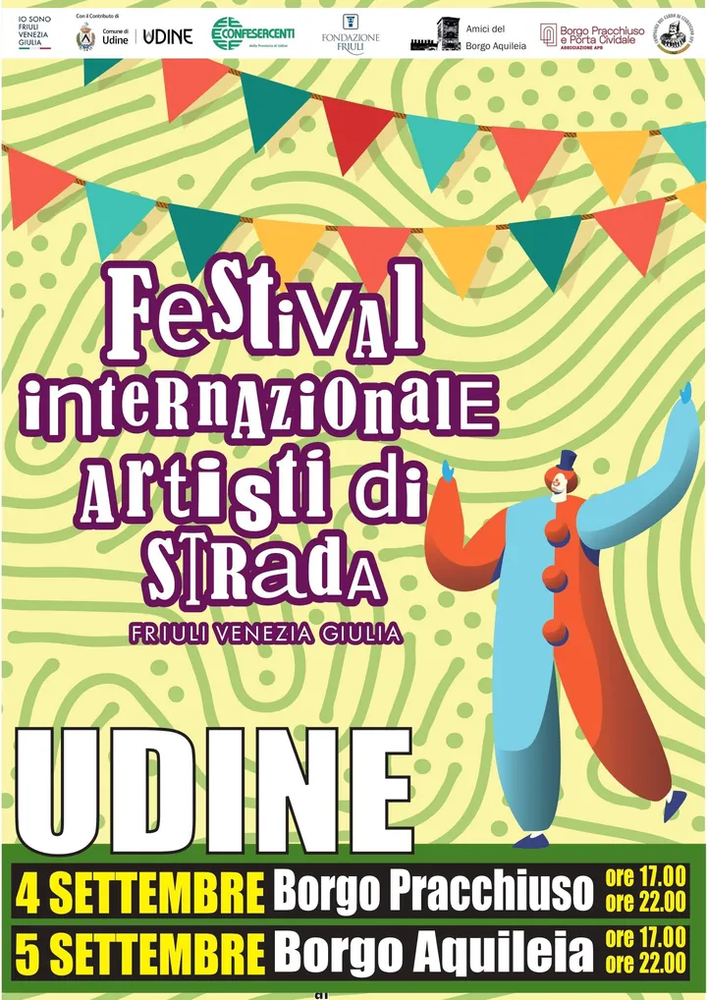

Friuli
da ven 4 set a sab 5 set · dalle 17:00
Festival internazionale degli artisti di strada
Due pomeriggi e sere di spettacoli di artisti di strada nei borghi cittadini.
 Indicazioni
Indicazioni
- Costi e prenotazioni
- Ingresso gratuito · Nessuna prenotazione indicata
- Programma
- Programma confermato. Date, vie e orari sono pubblicati dall’Agenda del Comune di Udine.
- In caso di maltempo
- Nessuna indicazione specifica pubblicata.
- Note
- Evento pensato anche per le famiglie.
L’EVENTO
Descrizione completa
Due pomeriggi di spettacoli itineranti, clown e artisti di strada animano due borghi di Udine. Il festival si sposta da Via Pracchiuso il venerdì a Via Aquileia il sabato, mantenendo la stessa fascia oraria.
Evento pensato anche per le famiglie.
IL PROGRAMMA
Programma e orari
Appuntamenti raccolti dalle fonti elencate. Dove manca un orario, non è ancora disponibile in questa scheda.
Venerdì 4 settembre
- 17:00–22:00 · Spettacoli in Via Pracchiuso
Sabato 5 settembre
- 17:00–22:00 · Spettacoli in Via Aquileia
INFORMAZIONI UTILI
Prima di partire
- Evento pensato anche per le famiglie.
- Contatti: turismo@comune.udine.it
ORGANIZZAZIONE